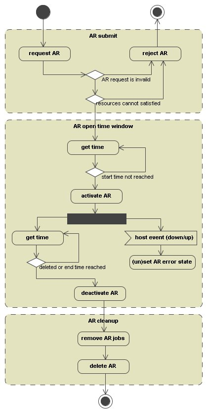
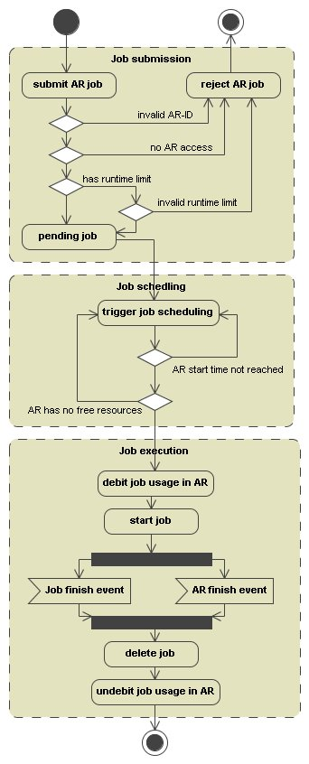

This document describes a project that extends N1 Grid Engine with Advance Reservation capabilities. In the specification document "Resource Reservation and Backfilling" Advance Reservation (AR) was defined as:
A reservation (possibly independent of a particular job) that can
be requested by a user or administrator and gets created by the
scheduler. The reservation causes the associated resources be blocked
for other jobs.
The GRAAP-WG Advance Reservation definition is:
A advance reservation is a possibly limited or restricted delegation
of a particular resource capability over a defined time interval,
obtained by the requester from the resource owner through a negotiation
process.
A possibly better way to explain what AR will be adding to Grid Engine
is by using the analogy of a flight reservation system: With Grid
Engine 6.0 Resource Reservation (RR) capabilities an administrator can
guarantee that passenger's will get their flights in the order they
arrive at the airport. This is sufficient for last-minute travelers,
yet it does not allow adequate travel planning. The purpose of AR is to
fill this gap, so that administrators can arrange a passengers travel
in advance based on an allocation schema that gets considered by the
Grid Engine scheduler.
End users are allowed to create, delete, show and use an AR.
The GUI will provide the same functionality as the CLI interface
JGDI will provide the same functionality as the CLI interface
The clients are uses by end users for requesting, deleting, showing and using an AR. It's also desired to modify an AR.
The new clients are:
| command | description |
|---|---|
| qrsub | create a new AR |
| qralter (desired) | modify AR |
| qrdel | delete an AR |
| qrstat | view status of ARs |
Enhanced clients:
| command | description |
|---|---|
| qsub | submit a job |
| qstat | show the status of jobs and queues |
| qmon | submit/delete/show AR |
| qacct | view finished jobs |
| switch/argument | description |
|---|---|
| -a date_time | start time in [[CC]YY]MMDDhhmm[.SS] |
| -alloc allocation_rule slot_range (desired) | reserve more than one slots |
| -A account_string | AR name in accounting record |
| -ckpt ckpt-name | reserve in queue with ckpt method |
| -d time | duration in TIME format |
| -e date_time | end time in [[CC]YY]MMDDhhmm[.SS] |
| -he yes/no | hard error handling |
| -help | print this help |
| -l resource_list | request the given resources |
| -m b/e/a/n | define mail notification events |
| -masterq wc_queue_list | bind master task to queue(s) |
| -now | reserve in queues with qtype interactive |
| -M user[@host],... | notify these e-mail addresses |
| -N name | AR name |
| -w e/v | validate availability of AR request, default e |
| -pe pe_name slot_range | reserve slot range for parallel jobs |
| -q wc_queue_list | reserve in queue(s) |
| -u wc_user | access list |
For qrsub the administrator and the user may define default request files (analogous to sge_request for qsub) which can contain any of the possible command line options. The file names are $SGE_ROOT/$SGE_CELL/common/sge_ar_request (global defaults file) and $HOME/.sge_ar_request (user private defaults file).
The most of the options are already specified for qsub and defined in submit(1)
Additional switches are:
Specifies the end time for the Advance Reservation in [[CC]YY]MMDDhhmm[.SS] format (see -a option). The use of this switch is optional if the start time with the -a option and the duration with the -d option is requested.
Specifies the duration of the Advance Reservation in TIME format. Refer to queue_conf(5) for a format description. The use of this switch is optional if the start time with the -a option and the end time with the -e option is requested.
Specifies the access list for the new Advance Reservation. Only users defined in this list are allowed to request the AR handle for their jobs. By default only the user who requested the AR has access. A access list is differentiated from a user name by prefixing the group name with a '@' sign.
Defines or redefines under which circumstances mail is to be sent to the AR owner or to the users defined with the -M option described below. The option arguments have the following meaning:
| flag | description |
|---|---|
| 'b' | Mail is sent at the beginning of the AR |
| 'e' | Mail is sent at the end of the AR |
| 'a' | Mail is sent when the AR when goes into error state or is valid again |
| 'n' | No mail is sent |
Specifies the behavior when the AR goes into error state. A hard error means as long as the AR is in error state no jobs using the reservation will be scheduled. If soft error is specified the reservation stays usable with the remaining resources.
By default the soft error handling is used.
It's desired to implement IZ 285 that describes a switch to define the allocation rule and how many slots are requested at submission time. The multiplication will also happen but the slots are now separated from the other resources.
Examples:
* Request 2 slots per host, on 2 quad CPU hosts, with two compiler licenses
-alloc 2 4 -l license=1/2 |
-alloc $fill_up 10 |
Reserve an slot in queue all.q on host1 or host2 or host3
qrsub -q all.q -l "h=host1|host2|host3" -u $user -a 01121200 -d 1:0:0 |
qrsub -q "*@host1,*@host2,*@host3" -u $user -a 01121200 -d 1:0:0 |
Reserve 4 slots on a host with arch=sol-sparc64
qrsub -pe alloc_pe_slots 4 -l h=sol-sparc64 -u $user -a 01121200 -d 1:0:0 |
Skipped due to time constrains
Currently not decided to implement
| switch/argument | description |
|---|---|
| -help | print this help |
| -f | force action (jobs referring to AR will be deleted) |
| -u | wc_user_list delete all users ARs |
| ar_list | delete all ARs given in list |
Jobs referring to a Advance Reservation tagged for deletion will also be removed. Only if all jobs referring an AR are removed from the N1 Grid Engine database the Reservation will also be removed.
Command Line Switches:
| switch/argument | description |
|---|---|
| -help | print this help |
| -ar ar_id | show scheduler advance reservation information |
| -u user_list | view only ARs requested by this user |
| -explain | explain error |
| -xml | print output in XML format |
The string $user is a placeholder for the current user name. An asterisk "*" can be used as user name wildcard to request any users ARs be displayed.
Possible reasons are:
The output format for the error reasons is one line per reason.
% qrstat
AR-ID name owner state start at end at duration
---------------------------------------------------------------------------------------
192 project_xy user1 r 12/14/2006 14:47:23 12/14/2006 14:57:33 0:10:10
193 user2 w 12/18/2006 10:00:00 12/19/2006 10:00:10 24:0:10
% qrstat -ar 193
==============================================================
id: 193
ar_name:
submission_time: Mon Nov 27 17:11:34 2006
owner: user1
acl_list: user1,user2
start_time: Mon Dec 18 10:00:00 2006
end_time: Tue Dec 19 10:00:10 2006
duration: 24:0:10
granted_slots: all.q@host1=2,all.q@host2=1
resource_list: myapp=2,myapp=1
...
|
| switch/argument | description |
|---|---|
| -ar | request AR with the ar_id |
| ar_id | positive integer |
Modifying the AR-ID with qalter will be denied if the job is already running.
| switch/argument | description |
|---|---|
| -j | show scheduler job information |
The following example illustrates the output. In the example 20 slots reserved on host brag and 1 AR job runs in the AR.
% qstat
queuename qtype resv/used/tot. load_avg arch states
---------------------------------------------------------------------------------
all.q@brag BIPC 20/1/20 0.02 darwin-x86
16 0.55500 Sleeper rd141302 r 11/28/2006 11:48:26 1
|
The "Submit Jobs" and the "Job Control" mask need to be enhanced for the AR-ID.
Qmon will get two new masks:
Because the accounting file will have a new column for the AR_id qacct parsing needs to be enhanced to view the correct output. Because the accounting file can have old entries by jobs prior 6.2 qacct needs to be able parse both formats.
To get a consistent accounting file a update procedure needs to be written that adds the new column for the AR_id to entries prior 6.2
Changing max_advance_reservations will take immediate effect.
This value is a global configuration parameter only. It cannot be overwritten by the execution host local configuration.
The Advance Reservation Object represents the requested AR for the N1 Grid Engine System. The request is stored in the internal Qmaster Database like all other object (for example. usersets, complexes).
Every AR is referenced by a unique integer ID. Analog to the Job ID the value is stored in the file "arseqnum" in the qmaster spool dir. The highest AR id is 9999999 like for jobs. If the highest AR is reached a wraparound happens and the next one starts with 1.
|  |
During the submit at first some basic values are validated.
To guarantee all jobs are removed from the cluster when AR end time is reached it is necessary to consider the DURATION_OFFSET for Advance Reservation also. This means all jobs submitted to a AR will have a resulting runtime limit of AR duration - DURATION_OFFSET. Jobs requesting a longer runtime will not be scheduled. The AR requester needs to keep this in mind when he creates a new AR.
It's necessary to restrict the users that are allowed to make an AR. This is done by a user list called 'arusers'. Only managers or users contained in the 'arusers' user list are allowed to create an ARs.
The 'arusers' user list will be created at installation time and the SGE admin user will be added to the list.
The resource selection will be similar as for a regular sequential or parallel job. At first the best suited hosts are selected and at second the desired amount of resources are reserved. The difference between job dispatching is that disabled, unknown or suspended queues are considered as suited queues. Queues in orphaned state are not suited like for job dispatching.
For a Advance Reservation the following restrictions and enhancements for selection the resources are necessary
For example:
% qconf -sq all.q | grep xuser_list denied_users % qconf -su denied_users | grep entries entries user3 % qrsub -u user1,user2,user3 -q all.q -a .... Error: No queue instances to reserve |
Conflicts can happen if jobs will not finish at the desired end of scheduled time slot. This is the case for jobs with no run time limit (h_rt) because jobs requested h_rt will be deleted automatically by Grid Engine if they exceed the requested time.
The solution to avoid such conflicts is by keeping non-runtime-limit jobs diverged from AR jobs. Because every job has a implicit slot count that refers to a queue instance this can be done by not reserving a AR on hosts where jobs with no run-time-limit are running and at the same time by not scheduling a non-runtime-limit job on a queue instance with a AR.
The following example illustrates the behavior:
% qstat -f queuename qtype used/tot. load_avg arch states ---------------------------------------------------------------------------- all.q@host1 BIPC 1/1 0.01 sol-amd64 3001 0.55500 Sleeper rd141302 r 12/14/2006 10:20:47 1 ---------------------------------------------------------------------------- all.q@host2 BIPC 0/1 0.09 sol-amd64 % qrsub -a 12141200 -d 0:30:0 -u user1 -h host1 denied: Reservation can't be granted % qrsub -a 12141200 -d 0:30:0 -u user1 -h host2 Your reservation 1 has been granted % qsub -w e -l h=host2 job_script Unable to run job: error: no suitable queues. Exiting. |
The reason why we are able to ignore RQS reservation and resource usage in conjunction with AR is that Quotas does not represent the capacity of a resource. The capacity is defined a global/queue/host level and must of course honored for AR requests. This means ignoring RQS will not lead in a resource overload, only the quota share for a special request may be exceed for the time the AR time window is open.
The following examples illustrates the behavior:
|
An already granted AR would become invalid for several reasons like configuration changes on reserved hosts, user set changes, or queue changes. All of these foreseeable events need to be rejected. A list of foreseeable events is:
The cases that are not foreseeable are the outage of a host or a queue instance error, disable or suspend. In such cases the affected AR goes into error state. If error mail sending is enabled the AR requester and all email addresses specified by the -M option will get a mail when the AR became invalid (earliest at AR start time when the error is detected) and when the AR is satisfied again.
The error handling can be specified at AR submit time. A hard error blocks the fault AR and the scheduled does not dispatch the referring AR-jobs. With soft error the AR stays usable with the remaining resources.
A granted Advance Reservation influence when a administrator removes a reserved queue instance. If this happens the removed queue will go into "orphaned" state. This is analogue when removing a queue with a running job. The queue will disappear when all advance reservations are ended.
Normally queues in orphaned state are not considered for job dispatching. Because the AR was requested and granted this is different for jobs requesting a AR. These jobs can be scheduled to the reserved orphaned queue.
When the AR end time is reached at first all jobs referring to the AR will be deleted and at second the AR itself will be deleted. No jobs can request the AR handle any longer.
| State | Description |
| w | waiting - granted but start time not reached |
| r | running - start time reached |
| x | exited - end time reached and doing cleanup |
| d | deleted - manual deletion |
| W | warning - AR became invalid but AR start time is not reached |
| E | error - AR became invalid and AR start time is reached |
This request adds the advance reservations in the specified list. The list elements are full specified advance reservations. The request is used for implementing qrsub command.
This request deletes all advance reservation in the specified list. The list elements needs only to specify the name or ID of the advance reservation to be removed. The request is used for implementing the qrdel command.
This request allows for retrieving advance reservations. CULL 'where' expressions can be used for selecting particular ARs, CULL 'what' expressions can be used for selecting particular AR fields.
This event is sent each time when a new advance reservation has been created. It contains the full advance reservation object, but no usage information.
This event is sent each time when an existing advance reservation is removed. The event contains only the name of the advance reservation to be removed.
This event is sent each time when an existing advance reservation has changed. It contains the full advance reservation object.
see Appendix #1 - Cull AR_Type definition
The AR Job Object is not a new Component, it's a enhancement of the regular N1GE Job Object to deal with Advance Reservations. All previous 6.1 job properties are still valid will work for AR and non AR jobs.
|  |
At job submit time some additional verifications are done. If one of the verifications fails the job will be rejected.
The verifications are:
Jobs requesting an AR will only be scheduled if the AR start time is already reached, which means the AR is active and in state running.
Additionally it needs to be ensured the resources requested by the job are all reserved and free. If other jobs are running using the AR and the resources are already in use the job will not dispatched.
To be sure jobs requesting an AR can not use more resources than reserved by the AR it's necessary to debit the AR job usage. This is done before the job starts. At job end the usage needs to be undebited.
All jobs (pending or running) will be deleted when the AR refereed by the job ends or will be deleted.
The Cull Object JB_Type defined in /lib/sgeobj/sge_jobL.h will get a new field JB_ar_id.
LISTDEF(JB_Type) ... SGE_ULONG(JB_ar_id) ... LISTEND |
After a AR end it's necessary to detect if a resource was reserved but not used over the complete time, only used partial or not used at all. Thus we need to add billing capabilities by enhancing the current accounting and reporting files. In addition dbwriter , arco and qacct needs to be enhanced.
The Accounting Component is part of the qmaster.
Accounting per AR
type: Advanced
view: pivot
sql: SELECT time, ar_number, cpu, mem, io
FROM (SELECT date_trunc('month', start_time)::date AS time,
ar_number,
SUM(cpu) AS cpu,
SUM(mem) AS mem,
SUM(io) AS io
FROM view_accounting
WHERE start_time > (current_timestamp - interval '1 year')
AND
ar_number > 0
GROUP BY time, ar_number) AS tmp;
Advanced Reservation Attributes
type: Simple
view: NONE
latebinding: ar_number
sql: SELECT "ar_number", "owner", "submission_time", "name", "account", "start_time", "end_time",
"granted_pe", FROM (SELECT ar_number, owner, submission_time, name, account, start_time, end_time,
granted_pe FROM view_ar_attribute) AS tmp WHERE "ar_number" = '';
Advanced Reservation Log
type: Simple
view: NONE
latebinding: ar_number
sql: SELECT "ar_number", "time", "event", "state", "message"
FROM(SELECT ar_number, time, event, state, message FROM view_ar_log ) AS tmp WHERE "ar_number" = '';
Advanced Reservation Time Usage
type: Advanced
view: NONE
sql: SELECT ar_number, job_duration, ar_duration,
age(('1970-01-01'::date + ar_duration::interval)::timestamp,
('1970-01-01'::date + job_duration::interval)::timestamp) AS unused_time
FROM view_ar_time_usage WHERE ar_number IN (SELECT ARL.ar_number
FROM view_ar_log ARL WHERE event = 'TERMINATED');
Advanced Reservation by User
type: Simple
view: NONE
latebinding: ar_owner
sql: SELECT "ar_number", "submission_time"
FROM(SELECT ar_number, ar_submission_time FROM sge_ar ) AS tmp WHERE "ar_owner" = '';
Number of Jobs Completed per AR
type: Advanced
view: NONE
SELECT ar_number AS ar_number,
date_trunc('day', start_time) AS day,
COUNT(job_number) AS jobs
FROM view_job_times
WHERE start_time > (current_timestamp - interval '1 year')
AND
ar_number > 0
GROUP BY day, ar_number;
To get an overview what finished jobs were running in a previous AR the job entry in the accounting field needs an additional field for the AR-ID.
see Appendix #2 - ARCo database model
#include "sge_boundaries.h"
#include "cull.h"
#ifdef __cplusplus
extern "C" {
#endif
/* values for AR_verify */
#define AR_OPTION_VERIFY_STR "ev"
enum {
AR_ERROR_VERIFY = 0,
AR_JUST_VERIFY
};
/* AR states for AR_state */
enum {
AR_UNKNOWN = 0, /* should never be seen. only used for variable initialisation */
AR_WAITING, /* w waiting - granted but start time not reached */
AR_RUNNING, /* r running - start time reached */
AR_EXITED, /* x exited - end time reached and doing cleanup */
AR_DELETED, /* d deleted - manual deletion */
AR_ERROR, /* E error - AR became invalid and start time is reached */
AR_WARNING /* W error - AR became invalid but start time not reached */
};
/* Advance Reservation Object */
enum {
AR_id = AR_LOWERBOUND,
AR_name,
AR_account,
AR_owner,
AR_group,
AR_submission_time,
AR_start_time,
AR_end_time,
AR_duration,
AR_verify,
AR_error_handling,
AR_state, /* state of the AR */
AR_checkpoint_name,
AR_resource_list,
AR_resource_utilization,
AR_queue_list,
AR_granted_slots,
AR_reserved_queues, /* runtime value */
AR_mail_options,
AR_mail_list,
AR_pe,
AR_pe_range,
AR_granted_pe,
AR_master_queue_list,
AR_acl_list,
AR_xacl_list,
AR_type /* -now switch */
};
LISTDEF(AR_Type)
JGDI_ROOT_OBJ(AdvanceReservation, SGE_AR_LIST, ADD | DELETE | GET | GET_LIST)
JGDI_EVENT_OBJ(ADD(sgeE_AR_ADD) | MODIFY(sgeE_AR_MOD) | DELETE(sgeE_AR_DEL) | GET_LIST(sgeE_AR_LIST))
SGE_ULONG(AR_id, CULL_PRIMARY_KEY | CULL_HASH | CULL_UNIQUE | CULL_SPOOL)
SGE_STRING(AR_name, CULL_DEFAULT | CULL_SPOOL | CULL_CONFIGURE)
SGE_STRING(AR_account, CULL_DEFAULT | CULL_SPOOL | CULL_CONFIGURE)
SGE_STRING(AR_owner, CULL_DEFAULT | CULL_SPOOL | CULL_JGDI_RO)
SGE_STRING(AR_group, CULL_DEFAULT | CULL_SPOOL | CULL_JGDI_RO)
SGE_ULONG(AR_submission_time, CULL_DEFAULT | CULL_SPOOL)
SGE_ULONG(AR_start_time, CULL_DEFAULT | CULL_SPOOL | CULL_CONFIGURE)
SGE_ULONG(AR_end_time, CULL_DEFAULT | CULL_SPOOL | CULL_CONFIGURE)
SGE_ULONG(AR_duration, CULL_DEFAULT | CULL_SPOOL | CULL_CONFIGURE)
SGE_ULONG(AR_verify, CULL_DEFAULT | CULL_SPOOL | CULL_CONFIGURE)
SGE_ULONG(AR_error_handling, CULL_DEFAULT | CULL_SPOOL | CULL_CONFIGURE)
SGE_ULONG(AR_state, CULL_DEFAULT | CULL_JGDI_RO)
SGE_STRING(AR_checkpoint_name, CULL_DEFAULT | CULL_SPOOL | CULL_CONFIGURE)
SGE_LIST(AR_resource_list, CE_Type, CULL_DEFAULT | CULL_SPOOL | CULL_CONFIGURE)
SGE_LIST(AR_resource_utilization, RUE_Type, CULL_DEFAULT | CULL_JGDI_RO)
SGE_LIST(AR_queue_list, QR_Type, CULL_DEFAULT | CULL_SPOOL | CULL_CONFIGURE)
SGE_LIST(AR_granted_slots, JG_Type, CULL_SPOOL | CULL_JGDI_RO)
SGE_LIST(AR_reserved_queues, QU_Type, CULL_DEFAULT | CULL_SPOOL | CULL_JGDI_RO)
SGE_ULONG(AR_mail_options, CULL_DEFAULT | CULL_SPOOL | CULL_CONFIGURE)
SGE_LIST(AR_mail_list, MR_Type, CULL_DEFAULT | CULL_SPOOL | CULL_CONFIGURE)
SGE_STRING(AR_pe, CULL_DEFAULT | CULL_SPOOL | CULL_CONFIGURE)
SGE_LIST(AR_pe_range, RN_Type, CULL_DEFAULT | CULL_SPOOL | CULL_CONFIGURE)
SGE_STRING(AR_granted_pe, CULL_DEFAULT | CULL_SPOOL | CULL_CONFIGURE)
SGE_LIST(AR_master_queue_list, QR_Type, CULL_DEFAULT | CULL_SPOOL)
SGE_LIST(AR_acl_list, ARA_Type, CULL_DEFAULT | CULL_SPOOL | CULL_CONFIGURE)
SGE_LIST(AR_xacl_list, ARA_Type, CULL_DEFAULT | CULL_SPOOL | CULL_CONFIGURE)
SGE_ULONG(AR_type, CULL_DEFAULT | CULL_SPOOL | CULL_CONFIGURE)
LISTEND
NAMEDEF(ARN)
NAME("AR_id")
NAME("AR_name")
NAME("AR_account")
NAME("AR_owner")
NAME("AR_group")
NAME("AR_submission_time")
NAME("AR_start_time")
NAME("AR_end_time")
NAME("AR_duration")
NAME("AR_verify")
NAME("AR_error_handling")
NAME("AR_state")
NAME("AR_checkpoint_name")
NAME("AR_resource_list")
NAME("AR_resource_utilization")
NAME("AR_queue_list")
NAME("AR_granted_slots")
NAME("AR_reserved_queues")
NAME("AR_mail_options")
NAME("AR_mail_list")
NAME("AR_pe")
NAME("AR_pe_range")
NAME("AR_granted_pe")
NAME("AR_master_queue_list")
NAME("AR_acl_list")
NAME("AR_xacl_list")
NAME("AR_type")
NAMEEND
#define ARS sizeof(ARN)/sizeof(char*)
/* Advance Reservation ACL Entry Object */
enum {
ARA_name = ARA_LOWERBOUND, /* user or userset */
ARA_group /* group name for user */
};
LISTDEF(ARA_Type)
SGE_STRING(ARA_name, CULL_PRIMARY_KEY | CULL_HASH | CULL_UNIQUE | CULL_SPOOL)
SGE_STRING(ARA_group, CULL_DEFAULT | CULL_SPOOL)
LISTEND
NAMEDEF(ARAN)
NAME("ARA_name")
NAME("ARA_group")
NAMEEND
#define ARAS sizeof(ARAN)/sizeof(char*)
/* *INDENT-ON* */
#ifdef __cplusplus
}
|
<version id="5" name="6.2">
<item>
<description>Create table sge_ar</description>
<sql>
CREATE TABLE sge_ar (
ar_id integer,
ar_number integer,
ar_owner text,
ar_submission_time timestamp,
PRIMARY KEY (ar_id)
)
</sql>
</item>
<item>
<description>Create index sge_ar_idx0</description>
<sql>CREATE INDEX sge_ar_idx0 ON sge_ar (ar_number)</sql>
</item>
<item>
<description>Create index sge_ar_idx1</description>
<sql>CREATE INDEX sge_ar_idx1 ON sge_ar (ar_owner)</sql>
</item>
<item>
<description>Create table sge_ar_attribute</description>
<sql>
CREATE TABLE sge_ar_attribute (
ara_id integer,
ara_parent integer,
ara_curr_time timestamp,
ara_name text,
ara_account text,
ara_start_time timestamp,
ara_end_time timestamp,
ara_granted_pe text,
PRIMARY KEY (ara_id),
FOREIGN KEY (ara_parent) REFERENCES sge_ar (ar_id)
)
</sql>
</item>
<item>
<description>Create index sge_ar_attribute_idx0</description>
<sql>CREATE INDEX sge_ar_attribute_idx0 ON sge_ar_attribute (ara_end_time)</sql>
</item>
<item>
<description>Create table sge_ar_usage</description>
<sql>
CREATE TABLE sge_ar_usage (
aru_id integer,
aru_parent integer,
aru_termination_time timestamp,
aru_qname text,
aru_hostname text,
aru_slots integer,
PRIMARY KEY (aru_id),
FOREIGN KEY (aru_parent) REFERENCES sge_ar (ar_id)
)
</sql>
</item>
<item>
<description>Create table sge_ar_log</description>
<sql>
CREATE TABLE sge_ar_log (
arl_id integer,
arl_parent integer,
arl_time timestamp,
arl_event text,
arl_state text,
arl_host text,
arl_message text,
PRIMARY KEY (arl_id),
FOREIGN KEY (arl_parent) REFERENCES sge_ar (ar_id)
)
</sql>
</item>
<item>
<description>Create index sge_ar_log_idx0</description>
<sql>CREATE INDEX sge_ar_log_idx0 ON sge_ar_log (arl_event)</sql>
</item>
<item>
<description>Create table sge_ar_resource_usage</description>
<sql>
CREATE TABLE sge_ar_resource_usage (
arru_id integer,
arru_parent integer,
arru_variable text,
arru_value text,
PRIMARY KEY (arru_id),
FOREIGN KEY (arru_parent) REFERENCES sge_ar (ar_id)
)
</sql>
</item>
<item>
<description>Adds the column ar_number to sge_job_usage table</description>
<sql>
ALTER TABLE sge_job_usage ADD COLUMN ju_ar_number integer DEFAULT 0
</sql>
</item>
<item>
<description>Create index on column ar_number</description>
<sql>
CREATE INDEX sge_job_usage_idx1 ON sge_job_usage (ju_ar_number)
</sql>
</item>
<item>
<description>Drop view view_job_times</description>
<sql>
DROP VIEW view_job_times
</sql>
</item>
<item>
<description>Drop view view_accounting</description>
<sql>
DROP VIEW view_accounting
</sql>
</item>
<item>
<description>Create updated view view_accounting</description>
<sql>
CREATE VIEW view_accounting AS
SELECT j_job_number AS job_number, j_task_number AS task_number,
j_pe_taskid AS pe_taskid,
j_job_name AS name, j_group AS group, j_owner AS username,
j_account AS account,
j_project AS project, j_department AS department,
j_submission_time AS submission_time,
ju_ar_number AS ar_number,
ju_start_time AS start_time, ju_end_time as end_time,
(ju_start_time - j_submission_time)::interval AS wait_time,
(ju_end_time - j_submission_time)::interval AS turnaround_time,
(ju_end_time - ju_start_time)::interval AS job_duration,
ju_ru_wallclock AS wallclock_time,
ju_cpu AS cpu, ju_mem AS mem, ju_io AS io, ju_iow AS iow,
ju_maxvmem AS maxvmem
FROM sge_job, sge_job_usage
WHERE j_id = ju_parent
AND j_submission_time > '1970-01-02'
AND ju_start_time >= j_submission_time
</sql>
</item>
<item>
<description>Update view view_job_times</description>
<sql>
CREATE OR REPLACE VIEW view_job_times AS
SELECT * FROM view_accounting
WHERE pe_taskid = 'NONE'
</sql>
</item>
<item>
<description>Create view view_ar_attribute</description>
<sql>
CREATE VIEW view_ar_attribute AS
SELECT ar_number AS ar_number,
ar_owner AS owner,
ar_submission_time AS submission_time,
ara_name AS name,
ara_account AS account,
ara_start_time AS start_time,
ara_end_time AS end_time,
ara_granted_pe AS granted_pe
FROM sge_ar, sge_ar_attribute
WHERE ar_id = ara_parent
</sql>
</item>
<item>
<description>Create view view_ar_log</description>
<sql>
CREATE VIEW view_ar_log AS
SELECT ar_number AS ar_number,
arl_time AS time,
arl_event AS event,
arl_state AS state,
arl_message AS message
FROM sge_ar, sge_ar_log
WHERE ar_id = arl_parent
</sql>
</item>
<item>
<description>Create view view_ar_usage</description>
<sql>
CREATE VIEW view_ar_usage AS
SELECT ar_number AS ar_number,
aru_termination_time AS termination_time,
aru_qname AS queue,
aru_hostname AS hostname,
aru_slots AS slots
FROM sge_ar, sge_ar_usage
WHERE ar_id = aru_parent
</sql>
</item>
<item>
<description>Create view view_ar_resource_usage</description>
<sql>
CREATE VIEW view_ar_resource_usage AS
SELECT ar_number AS ar_number,
arru_variable AS variable,
arru_value AS value
FROM sge_ar, sge_ar_resource_usage
WHERE ar_id = arru_parent
</sql>
</item>
<item>
<description>Create view view_ar_time_usage</description>
<sql>
CREATE VIEW view_ar_time_usage AS
SELECT ART.ar_number AS ar_number,
SUM(job_duration)::interval AS job_duration,
(ART.end_time - ART.start_time)::interval AS ar_duration
FROM view_ar_attribute ART LEFT OUTER JOIN view_accounting ACC
ON (ART.ar_number = ACC.ar_number)
GROUP BY ART.ar_number, ar_duration ORDER BY ART.ar_number
</sql>
</item>
<item>
<description>Update version table</description>
<sql>
INSERT INTO sge_version (v_id, v_version, v_time)
VALUES(5, '6.2', current_timestamp)
</sql>
</item>
</version>
|
<?xml version="1.0" encoding="UTF-8"?>
<xs:schema xmlns:xs="http://www.w3.org/2001/XMLSchema"
elementFormDefault="qualified">
<!-- ======================================= -->
<!-- qrstat output -->
<xs:complexType name="ar_summary_t">
<xs:sequence>
<xs:element name="id" type="xs:unsignedInt"/>
<xs:element name="name" type="xs:string" minOccurs="0"/>
<xs:element name="account" type="xs:string" minOccurs="0"/>
<xs:element name="owner" type="xs:string"/>
<xs:element name="submission_time" type="xs:dateTime"/>
<xs:element name="start_time" type="xs:dateTime"/>
<xs:element name="end_time" type="xs:dateTime"/>
<xs:element name="duration" type="xs:unsignedInt"/>
<xs:element name="state" type="xs:string"/>
<xs:element name="message" type="xs:string" minOccurs="0"/>
<xs:element name="resource_list" type="resource_list_t"/>
<xs:element name="granted_slots" type="granted_slots_list_t"/>
<xs:element name="granted_parallel_environment" type="granted_pe_t" minOccurs="0"/>
<xs:element name="checkpoint_name" type="xs:string" minOccurs="0"/>
<xs:element name="mail_options" type="xs:string"/>
<xs:element name="mail_list" type="mail_list_t" minOccurs="0"/>
<xs:element name="acl_list" type="acl_list_t" minOccurs="0"/>
<xs:element name="xacl_list" type="acl_list_t" minOccurs="0"/>
</xs:sequence>
</xs:complexType>
<!-- ======================================= -->
<xs:complexType name="resource_list_t">
<xs:sequence>
<xs:element name="resource" type="resource_t" minOccurs="1" maxOccurs="unbounded"/>
</xs:sequence>
</xs:complexType>
<xs:complexType name="resource_t">
<xs:attribute name="name" type="xs:string" use="required"/>
<xs:attribute name="type" type="xs:string" use="required"/>
</xs:complexType>
<xs:complexType name="granted_slots_list_t">
<xs:sequence>
<xs:element name="granted_slots" type="granted_slots_t" minOccurs="1" maxOccurs="unbounded"/>
</xs:sequence>
</xs:complexType>
<xs:complexType name="granted_slots_t">
<xs:attribute name="queue_instance" type="xs:string" use="required"/>
<xs:attribute name="slots" type="xs:unsignedInt" use="required"/>
</xs:complexType>
<xs:complexType name="granted_pe_t">
<xs:sequence>
<xs:element name="parallel_environment" type="xs:string" minOccurs="1" maxOccurs="1"/>
<xs:element name="slots" type="xs:unsignedInt" minOccurs="1" maxOccurs="1"/>
</xs:sequence>
</xs:complexType>
<xs:complexType name="mail_list_t">
<xs:sequence>
<xs:element name="mail" type="mail_t" minOccurs="1" maxOccurs="unbounded"/>
</xs:sequence>
</xs:complexType>
<xs:complexType name="mail_t">
<xs:attribute name="user" type="xs:string" use="required"/>
<xs:attribute name="host" type="xs:string" use="required"/>
</xs:complexType>
<xs:complexType name="acl_list_t">
<xs:sequence>
<xs:element name="acl" type="acl_t" minOccurs="1" maxOccurs="unbounded"/>
</xs:sequence>
</xs:complexType>
<xs:complexType name="acl_t">
<xs:attribute name="user" type="xs:string" use="required"/>
</xs:complexType>
</xs:schema>
|